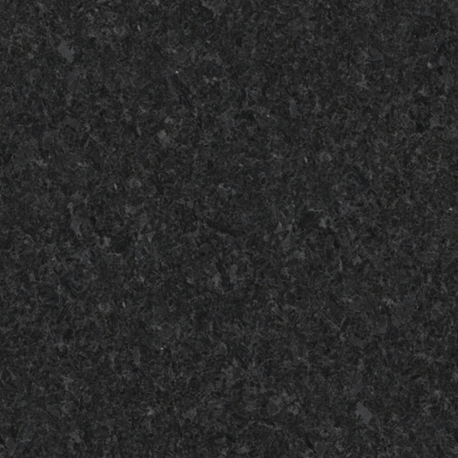
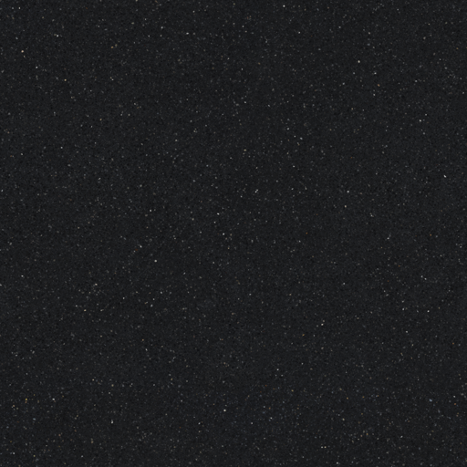

//Jacob Silveira
//CST-310
//Your World part 4: Simple living area in WebGL


<html>
<head>
    <title>Living Space in WebGL Part 5</title>
    <meta charset="UTF-8"/>
    <script src="app.js"></script>
    <script type="text/javascript" src="gl-matrix.js"></script>
    <script id="vertex-shader" type="x-shader/x-vertex">

    // for each vertex
    attribute vec3 vertexPosition_a;
    attribute vec3 vertexNormal_a;
    attribute vec4 vertexColour_a;
    attribute vec2 textureCoordinates_a;

    uniform mat4 modelMatrix_u;
    uniform mat4 viewMatrix_u;
    uniform mat4 projectionMatrix_u;
    uniform mat3 normalMatrix_u;
    uniform vec3 lightingDirection_u; //direction of light

    uniform vec3 ambientColour_u; //light colors
    uniform vec3 directionalColour_u;
    varying vec3 lightWeighting_v;

    varying vec4 colour_v;
    varying vec2 texture_v;

    void main(void) {
        gl_Position =
            projectionMatrix_u *
            viewMatrix_u *
            modelMatrix_u *
            vec4(vertexPosition_a, 1.0);

        colour_v = vertexColour_a;
        texture_v = textureCoordinates_a;

        //lighting
        vec3 transformedNormal = normalMatrix_u * vertexNormal_a;
        float directionalLightWeighting = max(
            dot(
                transformedNormal,
                lightingDirection_u
            ),
            0.0
        );
        lightWeighting_v = ambientColour_u + directionalColour_u + directionalLightWeighting;
    }
    </script>

    <script id="fragment-shader" type="x-shader/x-fragment">
    precision mediump float;
    varying vec4 colour_v;
    varying vec2 texture_v;
    varying vec3 lightWeighting_v;
    uniform sampler2D sampler_u;

    void main(void) {
        // gl_FragColor = vec4(1.0, 0.3, 1.0, 1.0);
        // gl_FragColor = colour_v;
        vec4 textureColour = texture2D(sampler_u, vec2(texture_v.s, texture_v.t));
        // gl_FragColor = texture2D(sampler_u, vec2(texture_v.s, texture_v.t));
        gl_FragColor = vec4(textureColour.rgb * lightWeighting_v, 1.0);


        //------------------------------------------------------------------------//
    }
    </script>


</head>
<body onload="main();">
<canvas id="canvas" width="640" height="480">
</canvas>
<p>
    press q for view 1, w for 2, and e for 3
</p>





</body>
</html>